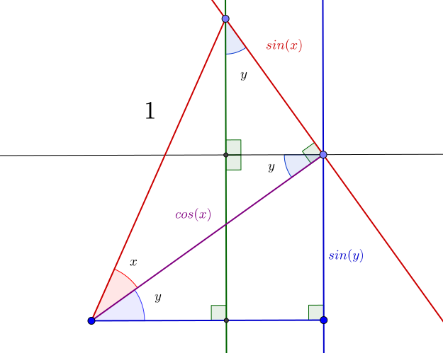

Angle Addition Identities
There are some key identities that allow decomposition of angle addition in the sine, cosine, and tangent functions.

In the diagram above, the length of the green line is `\sin(x+y)`.
The segment beneath the horizontal is equal in length to the right edge of the rectangle, featured in blue, with a length of `\cos(x)\sin(y)`.
The length of the upper segment is given by `\sin(x)\cos(y)`, as formed by the triangle in the upper-right.
Altogether,
`\boxed{\sin(x+y)=\sin(x)\cos(y)+\cos(x)\sin(y)}`
Next, the length of the blue segment left of the green vertical is `\cos(x+y)`, while the complete length of the line is given by `\cos(x)\cos(y)`.
The length of the segment on the right is `\sin(x)\sin(y)`, as shown by the triangle in the upper-right corner.
Therefore, the part of the blue line left of the green is equal to:
`\boxed{\cos(x+y)=\cos(x)\cos(y)-\sin(x)\sin(y)}`
Dividing the two formulas:
`\displaystyle\frac{\sin(x+y)}{\cos(x+y)}=\frac{\sin(x)\cos(y)+\cos(x)\sin(y)}{\cos(x)\cos(y)-\sin(x)\sin(y)}=\boxed{\tan(x+y)=\frac{\tan(x)+\tan(y)}{1-\tan(x)\tan(y)}}`
Proofs taken from
Khan Academy.